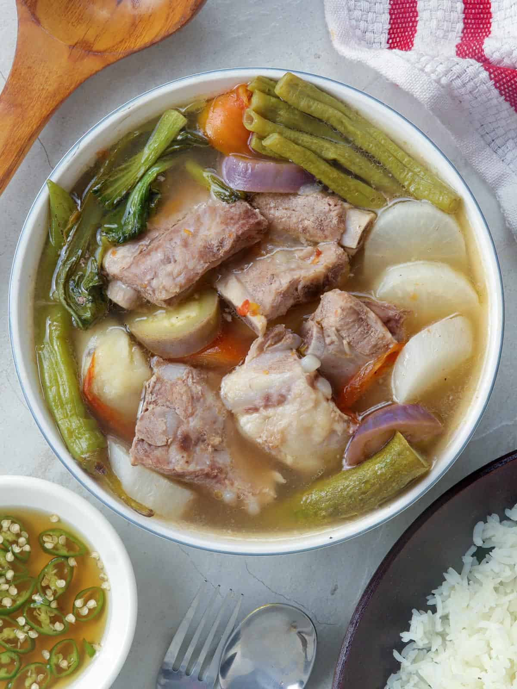

Sinigang na Baboy
2 lbs. pork belly, sliced into cubes
2 to 3 cups kangkong leaves
3 pieces long green chili pepper (siling pansigang)
2 pieces tomato, quartered
1 cup sliced daikon radish (labanos)
10 to 12 pieces snake beans, cut in 2-inch length pieces
1 piece onion, quartered
15 pieces okra
2 pieces taro, peeled and cut in half (gabi)
8 cups water
2 packs Knorr Sinigang sa Sampaloc Mix Original (20-gram pack)
3 tablespoons fish sauce (patis)
¼ teaspoon ground black pepper
Instructions
Pour water into a cooking pot. Let it boil.
Add onion and tomato. Boil for 5 to 8 minutes.
Put the pork in the cooking pot. Boil for 25 minutes.
Add the taro. Cover and continue to boil for 30 minutes.
Add Knorr Sinigang sa Sampaloc mix, fish sauce, and ground black pepper; stir.
Put the daikon radish in. Cook for 3 to 5 minutes.
Add the chili peppers, okra, and snake beans. Cook for 7 minutes.
Add the kangkong. Cover the cooking pot and turn off the heat. Let it stay covered for 5 minutes.
Transfer to a serving bowl. Serve with a small bowl with patis and spicy chili.
Share and enjoy!